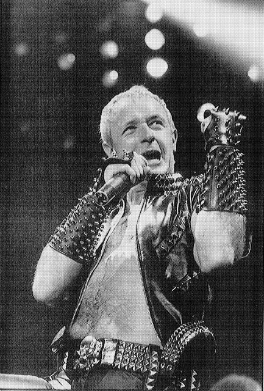

Grateful acknowledgment is made to the following publishers for permission to quote from their work:
Straight Arrow Publishers, Inc.: Excerpts from “Money for Nothing and the Chicks for Free,” by David Handelman, Rolling Stone, August 13, 1989. By Straight Arrow Publishers, Inc. Copyright 1989. All rights reserved. Reprinted by permission. Also excerpt from “The Band that Wouldn’t Die” by David Wild, Rolling Stone, April 5, 1990. By Straight Arrow Publishers, Inc. Copyright 1990. All rights reserved. Reprinted by permission.
Los Angeles Times: Excerpt from “Heavy-metal hit wins new respect for Iron Maiden,” by Dennis Hunt, Los Angeles Times, September 9, 1983. By Los Angeles Times. Copyright 1983. Reprinted by permission.
The Sun: Excerpts from “7 Tribes of Britain,” by Les Daly, The Sun (London), October 2, 1991. Reprinted by permission.
Doubleday: Excerpt from Soviet Women: Walking the Tightrope, by Francine Du Plessix Gray, Doubleday, 1990. Originally appeared: “Reflections: Soviet Women,” by Francine Du Plessix Gray, New Yorker, February 19, 1990. Reprinted by permission.
Permission granted to publish excerpts from personal correspondence with authors by Mars Bonfire, Gary Dray, and Michael Wedeven.
The Richmond Organization: Lyrics from “Suicide Solution,” by John Osbourne, Robert Daisley, and Randy Rhoads. Copyright 1981. Essex Music Publishing International Inc. and Kord Music Publishing. All rights reserved. Reprinted by permission.
Photographs on pages facing chapters 1, 3, and 7 by Paul Natkin.
Photographs on pages facing chapters 2, 5, and 6 by Kathy Pilat, DePaul University, 1991
Photograph on page facing chapter 4 by Eric Adams.
Photograph on page facing chapter 8 by Frank White.
